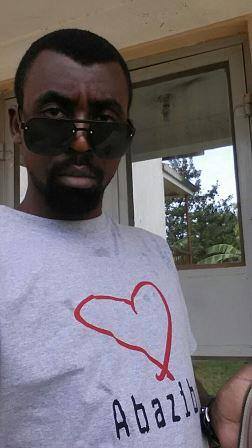

About Us

Abazibu, ha!...their origins are mysterious. But history has it that they originated from St. Joseph's Vocational School, Mbarara (Jovoc) around the year of Our Lord 2002. They rose from oblivion to become the talk of the school. By the end of our reign, they had left an indelible mark.
In their own words...
Abazibu were in Jovoc in the years 2000-2003. One thing that makes us stand out is that the UCE results of our candidate year (2003) are among the best ever in the history of the school. We even had one of the top students in Mbarara District that year.
Most of the guys come from the same region, that is, South Western Uganda and considering that we spent all those years together in school, this created a strong bond between us that even after all these years after finishing school, we are still "tight".
One of the cornerstones of our fraternity is togetherness. As the English adage goes; "two heads are better than one", or the Runyankole proverb; "agetereine nigo gaata eigufa"; its English translation being "you can only break a bone if you work together", we always make sure we are there for each other, in both the good and the bad.
We now run a Sacco, of which you can only be a member if you a muzibu or the spouse of a muzibu. Our sacco has performed very well in the last three(3) years. Members save monthly and their can easily get a loan without any hustle.Our vision is to turn our sacco into a commercial bank.
Just like the shoe prints on our logo, we aim to spread the abazibu spirit and brand far and wide. So, help us GOD.
Our Beliefs
Togetherness
"Coming Together is the Beginning,..."
Together we are strong. Our aim is to be there for each other, in both the good and the bad. And to help each other to be the best we can be in life; learning from each other and sharing experiences.
Saving
Don't wait till you are retiring to save. With that at the back of our minds, and the fact that we wanted to have more reasons to meet as more often as possible, we came up with the idea of starting a Savings and Credit Co-operative Society(Sacco). There are no regrets for having taken that path, because our sacco has tremendously grown over the years.
Love
Love Conquers All. With our Catholic background, marriage is something that we take very serious. It is as such, that as a rule a muzibu can only introduce one wife into the sacco.This encourages us to first be sure before we make that move to introduce our partners into the Abazibu family.
Our Leaders
The other objective of our fraternity is to nurture leaders that will play a part in building the Uganda and the world of today and tomorrow. And one of the ways we are doing that is by letting every muzibu have a short at being in the leadership of the fraternity. We hold annual elections of all the leadership positions.
Present Leaders
Vice Chairman

Lubega Julius
A banker by profession.He is one of the guys who rejuvenated the Abazibu fraternity
Chairman

Kwesigabo Andrew
An accomplished accountant with ACCA,CPA...
Treasurer

Kasozi Ivan
He is an economist by profession...
Secretary

Nyesigye Anthony
A telecom engineer by profession...
Publicity Secretary

Bahwerwa Felix
He is a banker by profession...
Past Leaders 2016/2017
Vice Chairman

Aryabimpa Robert
An environmental engineer by profession and certified safety specialist...
Chairman

Ninsiima Andrew Katizi
An accomplished businessman, he usually jokes that he knows how to "wash money" or use money to make more money...
Treasurer

Bazirake Augustine
This is his second term in office. A Statistician by profession, he loves coding. A self-taught Java enthusiast, he single-handedly developed a financial application that is being used by a number of saccos...
Secretary

Mayanja Anthony
An accountant by profession, though he has quite a number of years in the financial sector...
Publicity Secretary

Byaruhanga Didas
He is a reknowned businessman in the city, and a perfect example of the "from grass to grace" tale...
Past Leaders 2015/2016
Vice Chairman

Sseruwagi Alexander
An accomplished businessman, he knows and understands well the nuts and bolts of getting the best price for what he is selling...
Chairman

Nuwagira Deus
A Civil engineer by profession, with many successful projects handled...
Treasurer
Mugumire James Brian
This is his second term in office, He is a telecom engineer by profession, professional speaker, personal development coach...
Secretary
Aryabimpa Robert
An environmental engineer by profession and certified safety specialist...
Publicity Secretary

Ninsiima Andrew Katizi
An accomplished businessman, he usually jokes that he knows how to "wash money" or use money to make more money...
Past Leaders 2014/2015
Vice Chairman

Nyesigye Anthony
A telecom engineer by profession, who you can also consult on matters concerning the electro-mechanical field...
Chairman

Muhwezi Nicholas
He is a banker with close to a decade of banking experience...
Treasurer

Kwesigabo Andrew
An accountant by profession, he is a stickler for time keeping...

Past Leaders 2013/2014
Vice Chairman

Muhwezi Isaiah
A mechanical engineer by profession, generators are his babies...
Chairman

Runimba Thomas
He is a construction manager years of experience. He also runs a consultancy in Construction...
Treasurer
Bazirake Augustine
This is his second term in office, He is a telecommunications engineer by profession...
Secretary

Asiimwe Francis
He is a financial manager by training, with experience in the financial sector spanning almost a decade...
Publicity Secretary

Mugarura Olympia
A businessman, Olympia aka Kaka has seen it all; the lows and highs of doing business...
Past Leaders 2012/2013
Vice Chairman

Aryabimpa Robert
An environmental engineer by profession...
Chairman

Mugumire James Brian
This is his second term in office, He is a telecom engineer by profession, professional speaker, personal development coach...
Treasurer

Tumwesigye Davis
A computer scientist with a passion for coding, he is an application developer/ web developer/graphic designer. Do not be surprised if you find Davis on farm getting dirty; he does some serious farming also. In his words, "I am a dreamer and unconventional in my thinking..."...
Secretary

Habaasa Gilbert
Population studies are his specialty. He also does research...
Publicity Secretary

Mwesigye Michael Kabombora
A construction manager by profession, he still practices his first love; ART...
Past Leaders 2011/2012
Vice Chairman

Runimba Thomas
He is a construction manager years of experience. He also runs a consultancy in Construction...
Chairman

Bazirake Augustine
This is his second term in office. A Statiscian by profession, he loves coding. A self-taught Java enthusiast, he single-handedly developed a financial application that is being used by a number of saccos...
Treasurer

Bamwesigye Andrew
He is an electrical engineer by profession. Currently based in the U.S.A...
Secretary
He is a financial manager by training, with experience in the financial sector spanning almost a decade...
Publicity Secretary
Ninsiima Andrew Katizi
Accomplished businessman...